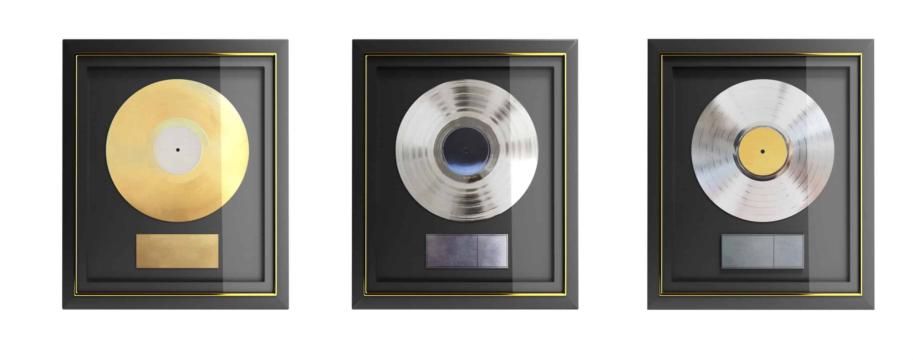
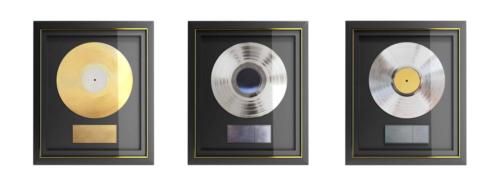

Liste des pistes
- Les étoiles vagabondes
- Alunissons
- Cheum
- Takotsubo
- Natsukahii
- Menteur menteur
- Écrire
- L'air du temps (Ft. Doums & Framal)
- Ciel noir
- De mon mieux
- Le bruit qui court
- Elle pleut (Ft. Nemir)
- Dans l'Univers (t. Vanessa Paradis)
- Premier pas
- Dernier soupir
- Tricheur (Ft. Damso)
- Voyage léger
- Compte les hommes (Ft. Alpha Wann)
- Oui et non
- Koala mouillé
- Jeux vidéos et débats
- Ken Kaneki
- CDGLAXJFKHNDATH (Ft. 2zer & Mekra)
- Rouge à lèvres (Ft. 2zer & Mekra)
- Sous les nuages
- Énergie sombre
- Όλα Καλά (Ola Kala)
- Pixels (Ft. Crystal Kay)
- De mes cendres
- Nouvel homme
- Chanson d'amour
- 1er rôle
- À la base
- L.E.V
"Les Étoiles Vagabondes" est le troisième album studio de Nekfeu, sorti le 6 juin 2019, accompagné d'un documentaire qui porte le même nom. L'album est le fruit d'un processus de création long et introspectif, ce qui se ressent à travers des textes profonds et mélancoliques. Les thèmes explorés sont plus personnels et vulnérables, comme la célébrité ("Alunissons"), les relations amoureuses ("Les étoiles vagabondes"), et les réflexions existentielles ("Tricheur"). L'album se distingue par sa qualité de production et la richesse de ses arrangements. Les collaborations, notamment avec Vanessa Paradis ("Dans l'univers") et Damso ("Tricheur"), enrichissent le projet. "Les Étoiles Vagabondes" révèle une croissance et une maturité certaine dans la musique de Nekfeu, qui n'hésite pas à se mettre à nu et à aborder des sujets complexes avec une poésie et une honnêteté rares. Critiquement acclamé et rencontrant un succès commercial immédiat, l'album a été certifié double disque de platine en France. Il consolide la réputation de Nekfeu comme l'un des rappeurs les plus talentueux et introspectifs de sa génération, capable de créer une œuvre à la fois commercialement viable et artistiquement exigeante.